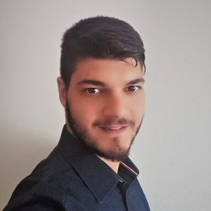

Gabriella Pasi (Lab Co-chair)
is Full Professor at the Department of Informatics, Systems, and Communication (DISCo) at the University of Milano-Bicocca. She is Head of the Information and Knowledge Representation, Retrieval and Reasoning Laboratory (IKR3 Lab) @ DISCo, and she has an extensive research experience in topics related to personalized search, and as an organiser of shared tasks and workshops. She has graduated a number of Ph.D. students focusing on the topics of personalization in search and on context modeling.
Marco Viviani (Lab Co-chair)
is an Associate Professor at the Department of Informatics, Systems, and Communication (DISCo) at the University of Milano-Bicocca. He has a broad experience in organising shared tasks and workshops in the Research Areas of Information Retrieval and Text Mining, such as CLEF eHealth 2020-21, ROMCIR 2021-23: Workshop on Reducing Online Misinformation through Credible Information Retrieval @ ECIR 2021-2023, and TrueHealth 2023: Workshop on Combating Health Misinformation for Social Wellbeing @ ICWSM 2023.
Alessandro Raganato (Lab Co-chair)
is an Assistant Professor at the Department of Informatics, Systems, and Communication (DISCo) at the University of Milano-Bicocca. He has relevant experience organising shared tasks (e.g., SemEval - International Workshop on Semantic Evaluation) in the topics of Natural Language Processing, such as SemEval-2023 Task 1 Visual Word Sense Disambiguation receiving more than 90 submissions, and the more recent SemEval-2024 Task on Text Hallucinations and Related Observable Overgeneration Mistakes.
Sandip Modha
is a researcher at the IKR3 Lab @ DISCo, working on IR. He has broad experience in organising shared tasks on the topics of Natural Language Processing, such as HASOC 2019-2023 and Indian Language Summarization ILSUM 2022-23.

Georgios Peikos
is a researcher at the IKR3 Lab @ DISCo, working on IR.
Gian Carlo Milanese
is a researcher at the IKR3 Lab @ DISCo, working on IR and credibility.
Pranav Kasela
is a third-year Ph.D. student at the IKR3 Lab @ DISCo, working on PIR.
Marco Braga
is a second-year Ph.D. student at the IKR3 Lab @ DISCo, working on PIR.
Effrosyni Sokli
is a first-year Ph.D. student at the IKR3 Lab @ DISCo, working on PIR.